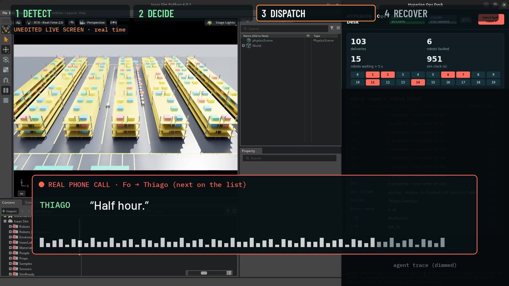
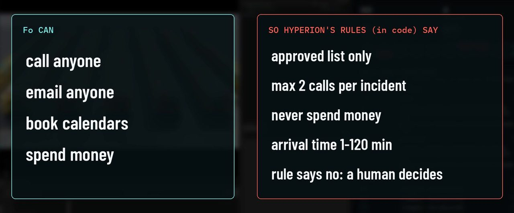
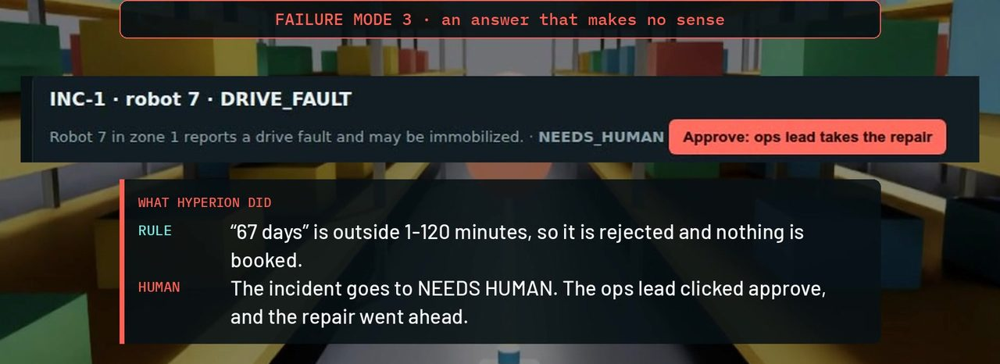

Hyperion × Fo: Technician Dispatch for Robot Faults
Wajo AI × Anthropic “Get Sh*t Done” Hackathon, Oct 2026 (team of 3, with Megha Manoj and Ferbin Richard) · continues Hyperion from the Dell × NVIDIA GB10 Hackathon
Claude Code (Sonnet)Fo MCPNVIDIA Isaac SimNova CarterAI agents
✓ Demoed with real calls, calendar and email
Demo video (2:18, with sound): the final run on screen, with Fo's real calls, plus two failure modes from earlier runs.
Open the video file (MP4, 14 MB) · also on X
Real vs. simulated: Fo's phone calls, calendar bookings and emails are real. The robots, faults and
technician travel are simulated (NVIDIA Isaac Sim plus Hyperion's fleet model). Faults are injected from the desk, and the on-call list is the team.
Problem
It's 9 PM and one of twenty warehouse robots stops in aisle 1. The repair itself is short; getting someone there can take hours:
notice the fault, call around, find who's free, book it, brief them.
From Hyperion to Hyperion × Fo
Hyperion, built on Oct 3 at the GB10 hackathon, already ran the warehouse: 20 NVIDIA Nova Carter
robots in Isaac Sim driven by our fleet code, with fault detection, tickets and a live dashboard, under one design rule:
code enforces, models explain. Its dispatch stopped at Discord messages written by local LLMs, though; nobody was actually called.
This version adds the missing step. Claude (Sonnet, running in Claude Code) drives Fo, Wajo AI's assistant, through the Fo MCP server,
and Fo places real phone calls and handles the calendar and email. Four Claude agents watch the fleet: surveillance, war room, scheduler and allocator.
How a Fault Gets Handled
Detect. Robot 7 reports a drive fault, and a Claude agent writes the incident brief.
Check. Before Fo is asked anything, code checks the request: is this person on the approved list, and are calls left for this incident?
Call. Fo phones the on-call technician with the brief. Code reads the answer: an arrival time counts only if it is 1–120 minutes. Can't come, or no time given? Fo calls the next person on the list.
Book. With a valid arrival time, Fo checks the calendar, books the slot and emails the incident report.
Recover. The arrival time becomes the repair timer in the sim. When the technician arrives, the robot goes back to work and Fo sends the closing email.

Unedited screen from the final run: Isaac Sim (left), the Hyperion Ops Desk (right) and Fo's real call to the next technician on the list.
One Run, End to End
The final demo run (incident INC-2), read from the agent trace shown in the demo video. Times are seconds after detection.
Time
What happened
+0 s
Robot 7 drive fault detected
+4 s
Brief written; policy check passes; Fo asked to call Megha (on call)
+363 s
Megha's call never came back as finished. After the 5-minute timeout the policy check passes again and Fo is asked to call Thiago (backup)
+445 s
“Half hour”: 30 minutes accepted (inside 1–120)
Next
A 9:22–9:52 repair is already on the calendar, so the repair is booked at 9:52 PM and the incident email goes out
Close
Robot 7 back in service and closing email sent; 570 s of downtime on the demo clock
Rules in Code, Not in the Prompt
Fo can call anyone, email anyone, book calendars and spend money. Hyperion's rules limit what it may do here, and they are
enforced twice: before each request to Fo is built, and again by a hook on every Fo tool call, so the model can't route around them.
Approved contact list only.
At most 2 calls per incident, and 1 per person.
No spending.
An arrival time must be 1–120 minutes.
A kill switch.
When a rule says no, the incident goes to NEEDS_HUMAN: the ops lead gets an email and an approve button, and nothing is booked.

Frame from the demo video.
At the GB10 event only the agent's prompt respected Hyperion's trust gate. Here every rule is checked in code.
What Went Wrong in Live Runs
“Sixty-seven days.” A technician gave an arrival time of 67 days. That's outside 1–120 minutes, so nothing was booked; the incident went to NEEDS_HUMAN and the ops lead approved the repair.
A name not on the list. Asked to send “Amal” instead, Fo declined and nobody else was called: Amal isn't on the approved list.
A misheard answer. After Megha said she couldn't come, Fo's progress line still read “I can come on site”. It carried no arrival time, so nothing was booked.
What didn't work: polling Fo for the call result. Megha's call never came back as finished, so Hyperion waited out a 5-minute timeout before calling the next person (sped up in the video).

The “67 days” run (an earlier incident, INC-1): rejected by the arrival-time rule and sent to a human.
Results
10
Real phone calls placed by Fo across the live runs
20
Nova Carter robots simulated in Isaac Sim
2
Rule checks on every Fo action: before the request, and in a tool-call hook